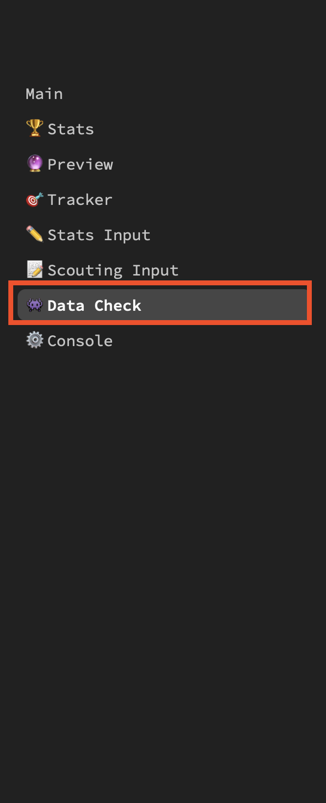

Reference for Running Stats at Competition
General Stats things
- Stats mentor/stats lead should have write access to the stats input Google sheet. If not, request access
- Members of stats team will use
comp-stats-chat channel in Slack to communicate
- If a scout has to miss taking stats for their match, they must inform the stats mentor/chat and ask for a substitute
- If a scout only has partial data for a match, tell them not to submit it
- If is scout tried to submit their complete data, but they are not sure if it went through, have them submit again
- Pit scouting should be done on practice day and be finished before lunch
- Pit scouting should be done in small groups to divide and conquer
Practice Matches
- Enable practice mode
- Manually assign stats schedule via

Qualification Matches
- Turn off practice mode and have students refresh the stats app
- Scouts will be automatically assigned match numbers and robot to track for all Quals matches
Stats Cleanup
- Stats mentor/stats lead should confirm that 6 entries are submitted each match by checking the RAW tab of the stats entry sheet
- Delete duplicate entries
- Make sure that all entries have the correct match number
- If any entries have the incorrect match number, fix the match number and team number in the spreadsheet
- You can find the correct team number for the match by navigating to the correct match number master list view
- If a match is missing 1 entry from one or both alliances, the data check page of the stats app will calculate the missing data
- Navigate to the data check page and expand the section for the missing match

- Toggle the raw JSON view and you should see all the raw data entries with the scouts names
- There should also be rows that have "Calc" instead of a student's name. Copy this entire row and paste it at the bottom of the RAW tab

Alliance Selection
- Stats mentor/lead should be sitting with one or both SN coaches for Alliance selection
- Stats mentor/lead will listen for team numbers to be announced and mark an "x" next to them respectively in the
Team_Avail tab in the spreadsheet
- IMPORTANT: An "x" must be added REGARDLESS of whether the team accepts or declines an invitation